O que é software ?
Um software é um serviço computacional utilizado para realizar ações nos sistemas de computadores. Ou seja: Um software é todo programa presente nos diversos dispositivos (computadores, celulares, televisores, entre outros).

- Software de sistema.
- Software de aplicação .
- Software de programação.
- Software de segurança.
- Software de bases de dados.
- Software de redes.
- Software educacional.
- Software de entretenimento.
- Software de gestão empresarial.
- Softeware de desing assistido por computador (CAD).
Software de sistema
Os softwares de sistema são os responsáveis pelos sistemas operacionais de todos os dispositivos e auxiliam os usuários em seu uso, de forma visual e através de comandos. São extremamente complexos em sua
Windows, Android,iOS.
Software de aplicação
O software de aplicação é criado, em regra, para executar tarefas específicas tal como o processamento de texto, reprodução de áudio. Ao contrário do software de sistema, estas tarefas não são indispensáveis ao normal funcionamento do computador e que só são executa- das a pedido do utilizador.
. Exemplos: Microsoft Word, Spotify, Calculadora, Instagram, TikTok.2 de nov. de
Software de progamação
São softwares que permitem que programadores criem outros programas, através do uso de linguagens de programação. Eles fornecem ferramentas e soluções para testar, compartilhar, gerenciar e até de facilitar a escrita dos códigos.
Exemplos: Word, Exel, Paint, Bloco de notas, calculadora. SOFTWARE DE PROGRAMAÇÃO: são softwares usados para criar outros programas, a parir de uma linguagem de programação, como Java, PHP, Pascal, C+, C++, entre outras.
Software de segurança
O que é o software de segurança? Software de segurança da informação: identifique o ideal para ... O que é um software de segurança da informação? Trata-se de uma classe de sistemas que age na identificação, na prevenção e no bloqueio de possíveis invasões, a partir dos códigos maliciosos. Ainda assim, existem sistemas para prevenir os ataques ou, até mesmo, para limitá-los.
. Exemplos: Windows, Android, iOS.
Software de bases de dados
O software de banco de dados às vezes também é conhecido como "sistema de gerenciamento de banco de dados" (DBMS). O software de banco de dados simplifica o gerenciamento de dados, permitindo que os usuários armazenem dados em um formulário estruturado e depois os acessem.
Alguns exemplos de softwares de gestão de banco de dados incluem Oracle, Microsoft SQL Server, MySQL, PostgreSQL e MongoDB.
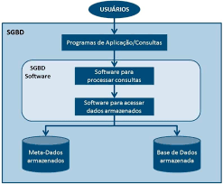
Software de redes
Software de rede é um termo extremamente amplo para uma gama de softwares voltados ao design e implementação de redes modernas. Vários tipos de software de rede suportam a criação, calibração e operação de redes.
SOFTWARE DE REDE. Programas (softwares) para redes de computadores podem estar em todos os níveis de uma rede. ... Windows 2000 Server. ... Novell Netware. ... Unix. ... Linux.
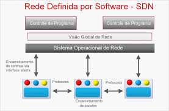Software educacional
O software educacional é uma solução completa para instituições de ensino de todos os portes e segmentos. Trata-se de um sistema que oferece controle total sobre as atividades da instituição e de seus colaboradores.
3D Angles. O software consegue transformar o estudo de uma matéria nada agradável em um jogo. ... ACD/Labs - ChemSketch. ... Ardora. ... Avogadro. ... Beads. ... Bitstrips. ... BK Chem. ... Braille Fácil 3.0 (Tecnologia Assistiva)
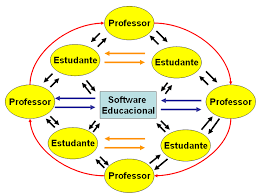Software de entreterimento
Software de entretenimento é qualquer software que apóie um hobby ou forneça uma forma de diversão. O software de entretenimento inclui videogames, ...
... Exemplos: The Sims; Candy Crush; League of Legends.
Software de gestão empresarial
O software de gestão empresarial ocupa uma posição central nas organizações modernas: o painel de controle que concentra todos os dados, documentos e processos do negócio. Com ele, é possível integrar todas as áreas da empresa, automatizar tarefas e acelerar as rotinas diárias, conquistando muito mais eficiência.
Conta Azul. O software de gestão financeira Conta Azul é bem completo e fácil de usar. ... Nibo. Outra opção de software de gestão financeira é o Nibo. ... Asaas. ... Agendor. ... Pipedrive. ... Trello. ... Tiny. ... QuickBooks.
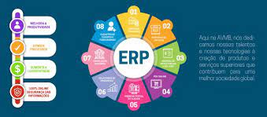Software de desing assistido por computador(CAD)
Projeto/Desenho Assistido por Computador (Computer Aided Design) é a utilização sistemas computacionais para auxiliar na criação, modificação, análise, ou otimização de um projeto.
Inventor CAM. ... SketchUp. ... SolidWorks. ... 3DS Max. ... Maya. ... Revit. ... Civil 3D.
O que é Windows?
É um sistema operacional de interface gráfica multitarefa. Isso significa que podemos trabalhar com vários programas simultaneamente.
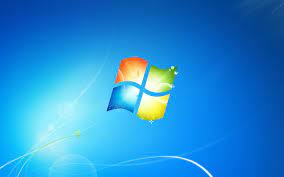- Windows XP (NT 5.1).
- Windows Server 2003 (NT 5.2).
- Windows Vista (NT 6.0).
- Windows Server 2008.
- Windows 7 (NT 6.1).
- Windows 8 (NT 6.2).
- Windows 8.1 (NT 6.3).
- Windows 10.
Windows XP (NT 5.1)
E o primeiro sistema operacional para consumidores produzido pela Microsoft construído em nova arquitetura e núcleo (Windows NT 5.1).
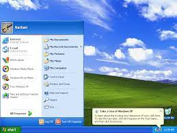Windwos server 2023 (NT 5.2)
É uma plataforma para compilar uma infraestrutura de aplicativos, redes e serviços Web conectados, do grupo de trabalho ao data center. Ele faz a ponte entre os ambientes locais e o Azure, adicionando mais camadas de segurança enquanto ajuda você a modernizar seus aplicativos e sua infraestrutura.
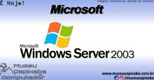Windows vista (NT6.0)
Foi um sistema operacional desenvolvido pela Microsoft, sendo a sexta versão do Windows para uso em computadores pessoais, incluindo computadores residenciais e de escritórios, laptops, Tablet PCs e computadores Media Centers.
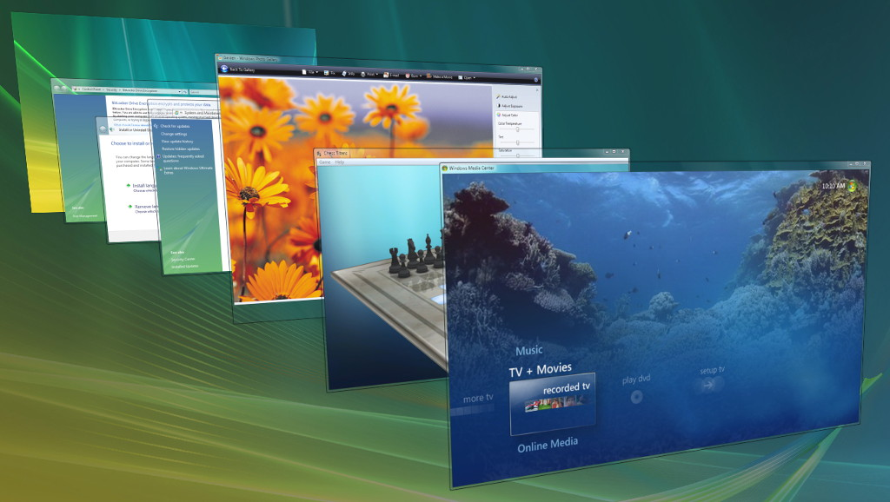Windows server 2008
Fornecer serviços Web para a implantação de sites e aplicativos baseados na Web. Essa versão do servidor somente dá suporte a recursos relacionados.
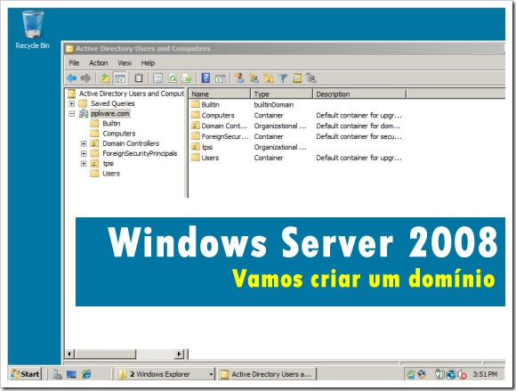Windows 7 (NT 6.1)
O Windows 7 é o mais novo sistema operacional desenvolvido pela Microsoft. Visualmente ele é muito parecido com seu antecessor, o Windows Vista, porém a nova interface é muito mais rica e intuitiva, tornando a experiência individual muito melhor.
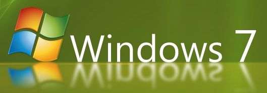Windows 8 (NT 6.2)
É um sistema operacional da Microsoft para computadores pessoais, portáteis (lê-se Notebooks), netbooks e tablets. É o sucessor do Windows 7.
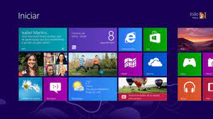Windows 8.1 (NT 6.3)
Windows 8.1 incluem a mesma funcionalidade Windows 8.1, com exceção de certos aplicativos pré-instalados de mídia (música, vídeo, gravador de som e Skype) e tecnologias relacionadas à mídia (Windows Media Player).
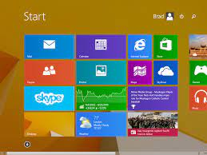Windows 10
É um sistema operacional de interface gráfica multitarefa. Isso significa que podemos trabalhar com vários programas simultaneamente